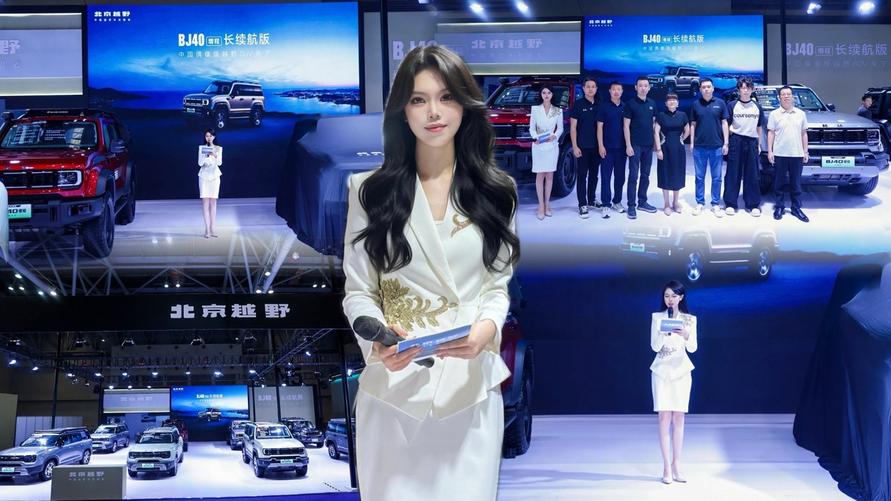
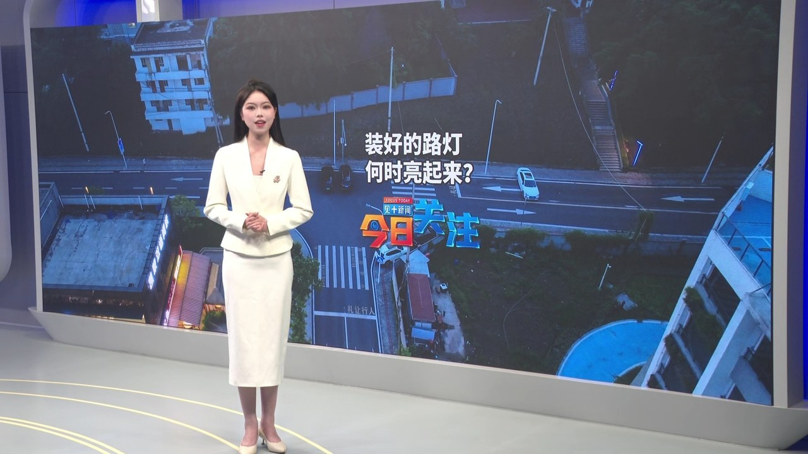
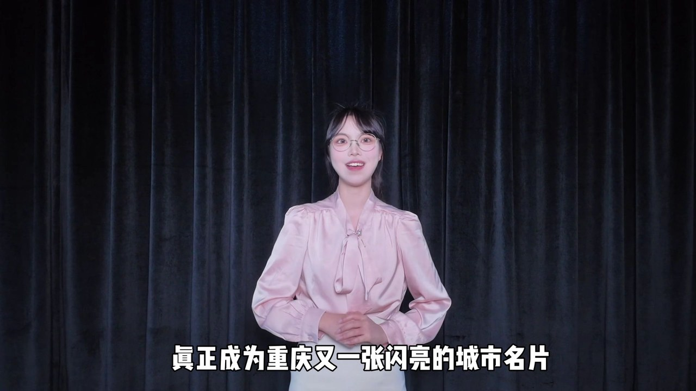
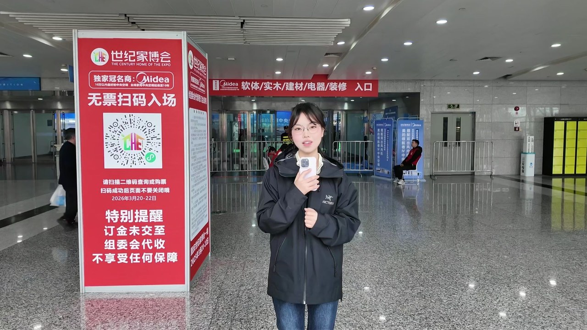
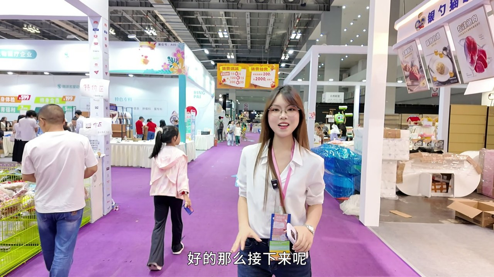

-
视频 · Video
腾讯云城市峰会 · 分会场主持
独立担任「腾云出海沙龙」分会场全程主持，衔接七位嘉宾演讲与圆桌对话，零失误完成全程直播。
-
视频 · Video
星途 EXEED · 车展展台主持
重庆国际汽车博览会星途展台主持开场，展台流程主持与现场控场。
-

视频 · Video
北京越野 · 发布会主持
BJ40 增程长续航版重庆发布会开场主持，汽车类发布会主持案例。
-
视频 · Video
《九龙新闻》· 演播室播报
独立完成新闻稿件播读与演播室出镜播报，涵盖普通话语音与镜头前表现力。
-

视频 · Video
《今日关注》· 出镜口播
九龙坡区融媒体中心新闻栏目出镜口播，新闻播音功底与镜头表现力。
-

视频 · Video
「渝超」赛事 · 即兴评述
体育新闻评论类口播，即兴评述与新闻播报能力的实战展示。
-

视频 · Video
世纪家博会 · 现场报道
出镜记者报道：前期脚本撰写、拍摄、出镜到后期剪辑全链路独立完成。
-

视频 · Video
宠物博览会 · 出镜报道
背景调查、脚本、拍摄、出镜与后期全流程独立完成的展会新闻报道。